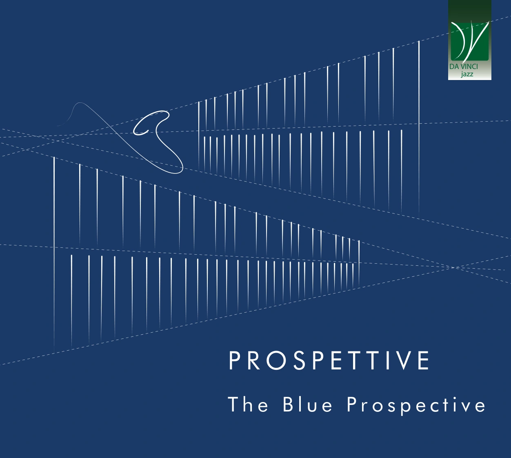
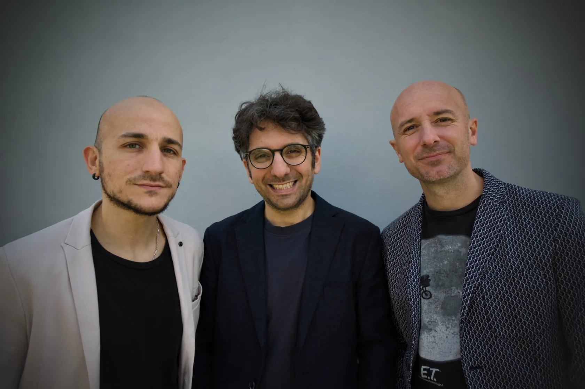
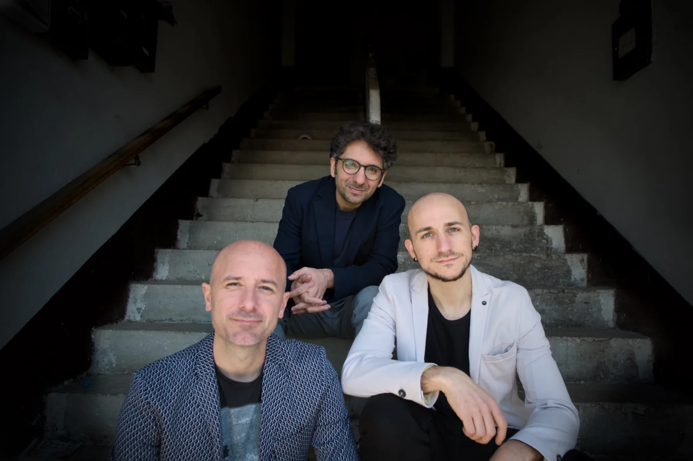

THE BLUEPROSPECTIVE

Artwork & design: Jonathan Corda
Prospettive.
Undici tracce tra composizioni originali e riletture della tradizione jazz. Un percorso in cui il suono del sax alto dialoga con le trame armoniche e ritmiche di vibrafono e marimba.
Ascolta su SpotifyCoraggio è affrontare il presente e fare sempre un passo in avanti verso il futuro.
TRACKLIST
- 01Fear of Roaming Seamus Blake
- 02Merlok Andrea Mellace
- 03The City Ways Andrea Mellace
- 04Peace Hotel Paolo Recchia
- 05Ear Paolo Recchia
- 06Isn't This My Sound Around Me? Bobby Hutcherson
- 07Prospettive Andrea Mellace
- 08Rope Jordan Corda
- 09From Day to Day Mulgrew Miller
- 10Jig-a-Jug Joshua Redman
- 11Summer in Central Park Horace Silver
Registrato il 31 gennaio e 1 febbraio 2026 ad A-SeePRecord Studio, Roccascalegna · Registrazione, mix e mastering: Antonio Di Donato · Artwork: Jonathan Corda · Foto del disco: Sasha Mashin.
Tre percorsi.
Un'identità.
The Blue Prospective nasce dalla collaborazione tra Paolo Recchia al sax alto, Jordan Corda al vibrafono e Andrea Mellace alla marimba. La particolarità dell'organico dà vita a sonorità ricche e avvolgenti: arrangiamenti originali, composizioni dei musicisti e riletture del repertorio jazz si intrecciano a una forte componente improvvisativa.

Paolo Recchia
Sax alto
Sassofonista dalla forte identità melodica e dal suono personale, si è esibito in Europa, Asia e Stati Uniti. Ha collaborato con artisti come Roy Hargrove, Jeremy Pelt, Fabrizio Bosso, George Garzone e Dado Moroni. Nel 2015 ha ricevuto un riconoscimento al Johnny Răducanu International Jazz Festival in Romania.
Jordan Corda
Vibrafono
Vibrafonista e compositore, si è formato ai conservatori di Cagliari, Milano e Pescara. Ha collaborato con musicisti tra cui Luca Mannutza, Sasha Mashin e Max Ionata e si è esibito in festival italiani e internazionali, tra cui JazzMi, Time in Jazz e l'European Jazz Expo.
Andrea Mellace
Marimba
Percussionista specializzato in marimba e vibrafono, diplomato al Conservatorio di Milano. Membro di Federico Calcagno & The Dolphians, ha suonato in festival quali Bergamo Jazz, Edinburgh Jazz & Blues Festival e JazzMi. È anche leader del proprio quartetto, con cui ha pubblicato Scirocco.

CONCERTI · COLLABORAZIONI · STAMPA
Contatti / Contact
Per concerti, booking, collaborazioni e richieste stampa, scrivici direttamente.
blueprospectivetrio@gmail.com